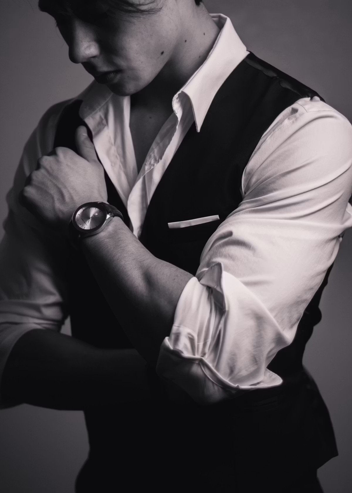

Why Sourcing a Grand Seiko Is Harder Than It Should Be
Grand Seiko sits in an unusual position in the luxury watch market. The brand makes watches that rival — and in finishing terms, frequently surpass — Swiss pieces at similar price points. Yet its distribution network has not kept pace with its growing collector following. Outside Japan, authorised dealer coverage is thinner than you might expect for a brand of this calibre, allocation for the most sought-after references is tight, and the grey market has developed its own pricing dynamics that don't always reflect retail logic.
The result is that a collector who simply walks into a jeweller and asks for a Grand Seiko Snowflake may be told it's available immediately — because they're looking at standard models. The same collector asking for a limited Spring Drive reference or a boutique-exclusive dial texture will encounter a very different conversation. Understanding which category your target reference falls into is the first decision you need to make.
The three tiers of Grand Seiko availability in 2026: Core collection pieces (widely available at authorised dealers and grey market), sought-after references like the Snowflake SBGA211 (available but at a discount on the secondary market), and boutique-exclusives and limited editions (allocation only, often Japan-exclusive, grey market premium applies).
⌕ Where Should You Buy? — Quick Decision Guide
Authorised Dealer First
Full warranty · GS9 Club eligible · No premium. UK: New Bond St boutique, Berry's, James Porter. US: Official boutiques, Exquisite Timepieces.
Grey Market — Verified Only
AD allocation won't help. Use Chrono24 verified dealers or BQ Watches London. Confirm sold comps before agreeing any price.
Consider Secondary Market
Snowflake currently ~17% below retail. Use our Watch Finder — 63 verified sources, 24 countries. Real saving, verified seller.
Buy Authorised
The marginal saving doesn't justify losing the warranty. Buy new from an authorised dealer and join the GS9 Club.
Authorised Dealers — United Kingdom
Buying from an authorised dealer gives you full manufacturer warranty, genuine after-sales support, and GS9 Club membership. For everyday references and new releases, this is the straightforward route.
Official Boutique · Authorised
Grand Seiko Boutique — New Bond Street, London
The brand's own boutique at 68 New Bond Street, W1S 1RR, is the definitive UK source. Full collection access, private appointment available. Open Monday to Saturday 10:00–19:00, Sunday 11:00–17:00. For allocation and limited pieces, a relationship with the boutique team is worth building.
Authorised Dealer · Multi-Location
Berry's Jewellers
One of the UK's most committed Grand Seiko stockists, with boutiques in Newcastle, Nottingham, Leeds and York. Strong on core collection pieces. Worth calling ahead to confirm specific reference availability before travelling.
Authorised Dealer · Online & In-Store
James Porter & Son
Official UK stockist with an active online presence. Offers 0% finance options on Grand Seiko — worth considering on higher-value Spring Drive references. Good stock of Heritage collection pieces.
Authorised Dealer · Online
Jura Watches · CW Sellors
Both are authorised UK stockists with online purchasing. Useful for core collection pieces and for buyers outside major cities. Always verify the specific reference is in stock before ordering.
Grand Seiko — UK Authorised Dealers & Specialists
Official Boutique
68 New Bond Street · London W1S 1RR
Berry's Jewellers
Newcastle · York · Leeds · Nottingham
BQ Watches
Pre-owned specialist · London showroom
James Porter & Son
Online authorised · 0% finance available
Authorised dealer verdict: For core production references — Spring Drive, Hi-Beat, standard Heritage pieces — authorised dealers are the clean route. Full warranty, genuine piece, GS9 Club eligibility. The limitation is allocation: boutique-exclusives and limited editions will not be available here without a waitlist relationship.
Authorised Dealers — United States
Authorised Dealer · Florida
Exquisite Timepieces — Naples, Florida
A well-regarded authorised Grand Seiko dealer carrying 160+ references with online purchasing and international shipping. Five-year warranty on purchases. One of the more comprehensive US stockists for range depth.
Official Boutiques · Multiple Locations
Grand Seiko Official US Boutiques
Grand Seiko operates official boutiques across major US cities including New York and Los Angeles. For sought-after references and US-exclusive releases, these are the primary source. Appointment booking available via the official Grand Seiko website.

The serious collector understands where to look — and what to pay
The Grey Market — What's Actually Happening in 2026
The Grand Seiko grey market in 2026 is broadly buyer-friendly for standard references. Unlike Rolex or Patek Philippe — where grey market premiums can reach 20–40% above retail — most Grand Seiko references trade at or below retail on the secondary market.
The Snowflake SBGA211 is the clearest example: retail around $6,000, secondary market trading at approximately $5,000 as of May 2026, according to WatchCharts data. This has two implications. First, buying grey market for standard references is not the cost-saving arbitrage it once was — the discount is real but modest, and you lose the manufacturer warranty. Second, for collectors who prioritise value, Spring Drive models are up 22% on average over the past 24 months — the broader market is beginning to price in what serious horological collectors have known for years.
The exception is limited editions and boutique-exclusives. Japan-exclusive references and boutique-only dials can command 25–30% premiums above retail — because collectors outside Japan have no authorised route to purchase them. Here the grey market is the only market.
⌕ Retail vs Secondary Market — May 2026 · Source: WatchCharts
Trusted Grey Market Sources
Grey Market · Global Platform
Chrono24
The largest secondary market platform globally. Extensive Grand Seiko selection from verified professional dealers. Always filter for dealers with verified reviews and confirm box and papers before purchasing. Buyer protection available on platform transactions.
Pre-Owned Specialist · UK
BQ Watches — London
A London-based pre-owned specialist with 30 years of market experience. Strong Grand Seiko selection including Snowflake and Spring Drive references. Every piece inspected and authenticated in-house. Physical showroom for in-person viewing, insured UK delivery and free returns.
Grey market verdict: For standard production references, the grey market discount in 2026 is real but modest — roughly 15–17% below retail for the Snowflake, less for rarer pieces. For Japan-exclusives and boutique-only references, the grey market is your only option outside Japan — buy only from established, verified dealers.
What to avoid: Private listings without verifiable seller history. Any seller asking above recent sold comps without explanation. Quartz models above £3,000 if resale matters — the secondary market has not embraced Grand Seiko quartz at those price points.
Movement Comparison — Which Grand Seiko Should You Buy?
The movement you choose determines your experience of the watch, its value retention, and how it behaves day to day. Grand Seiko makes three movement types — and they are not equal.
Grand Seiko — Movement Guide 2026
★ Recommended
Spring Drive
Enthusiast
Hi-Beat 36000
Practical
9F Quartz
The Japan Price Advantage
Grand Seiko watches are consistently 20–30% cheaper in Japan than in Europe or the US before tax refund. For collectors travelling to Tokyo or Osaka, visiting a Grand Seiko boutique or department store watch floor is worth planning into the trip. The brand's Shinjuku and Ginza locations carry references unavailable anywhere else, and tax-free shopping for foreign visitors reduces the price further.
The caveat: Japan-purchased watches carry a Japanese warranty, which may complicate service claims in your home country. For most collectors this is theoretical — Grand Seiko's service network is global — but worth understanding before carrying a $7,000 watch through customs.
The Honest Summary
Grand Seiko in 2026 is one of the most compelling buys in luxury watches. The finishing quality, the Spring Drive movement, and the current secondary market pricing all point in the same direction. The Snowflake is the right entry point — trading below retail right now, no allocation problem, available from verified dealers. Buy one from an authorised source if you want the warranty and GS9 Club membership. Buy secondary market if the 17% saving matters more.
Avoid quartz above £2,500 if resale matters. Buy Spring Drive if you buy nothing else. The brand is growing — the collector community faster still. The window where serious references are available at or below retail will not stay open indefinitely.
⌕ Watch Finder
Source Any Grand Seiko Reference
Search 63 verified dealers, grey market specialists and auction houses across 24 countries. Current availability and pricing — free, no registration.
Find Grand Seiko Watches →